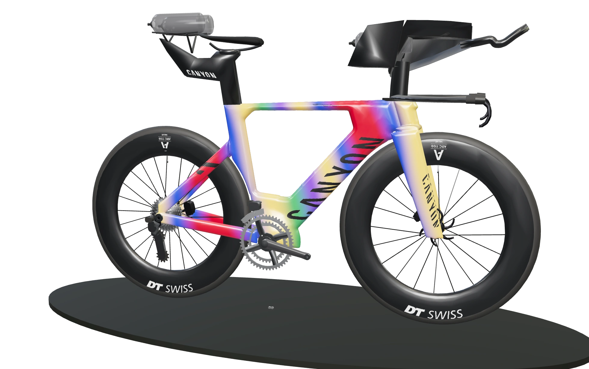
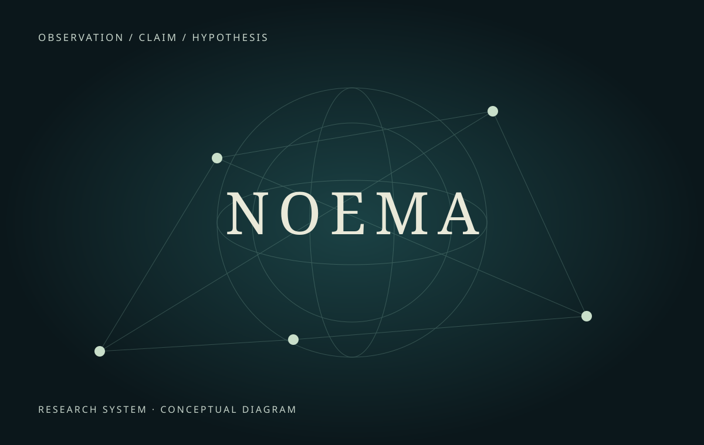
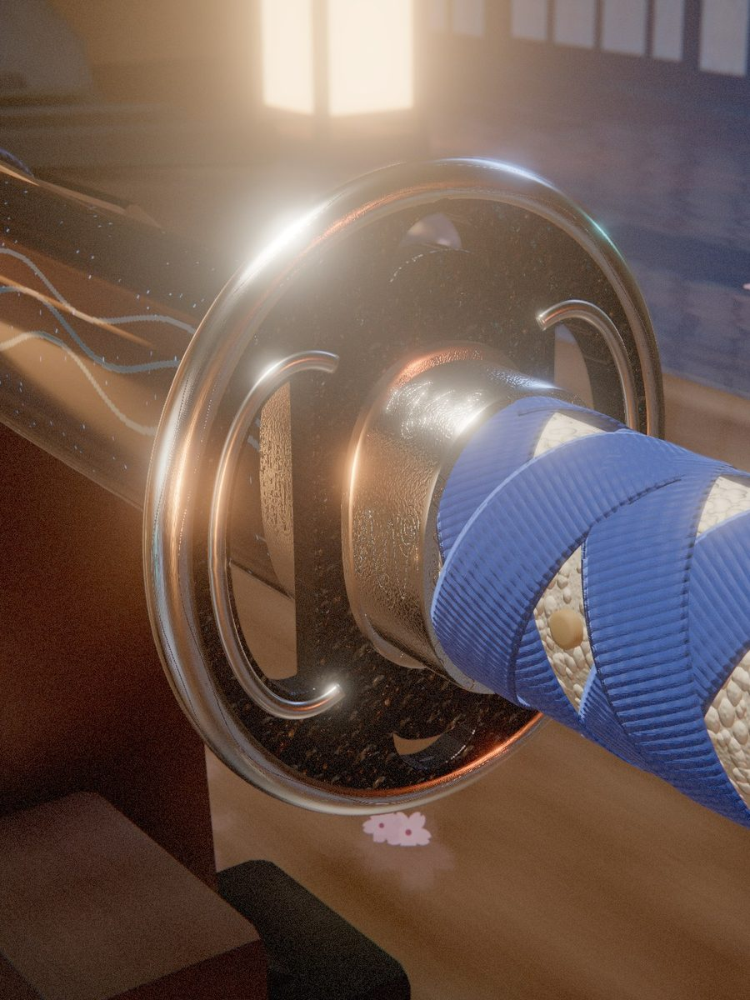
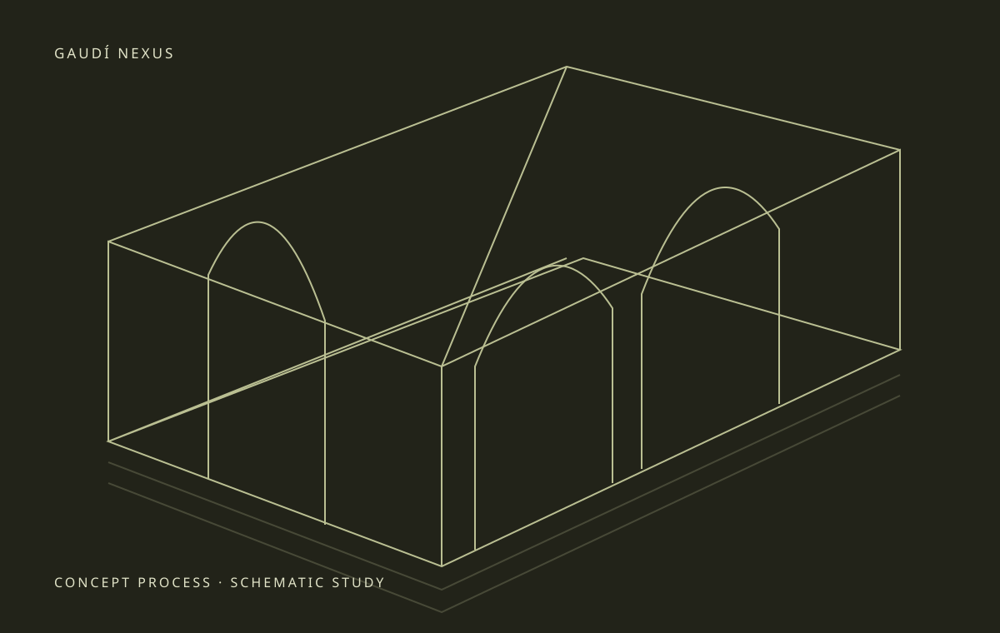
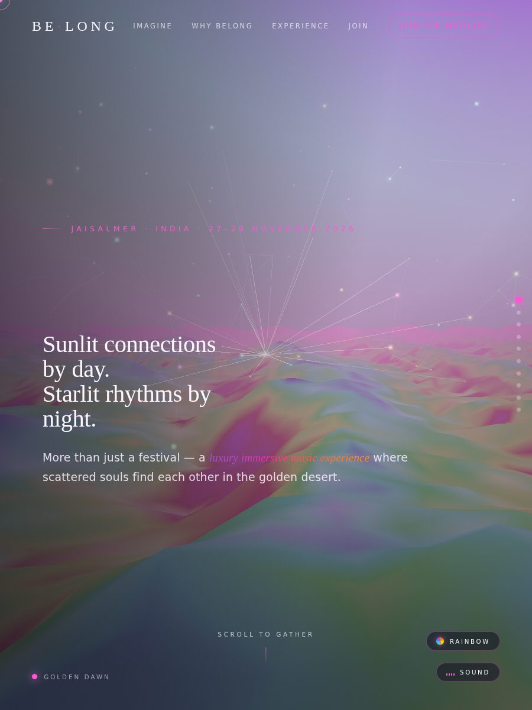
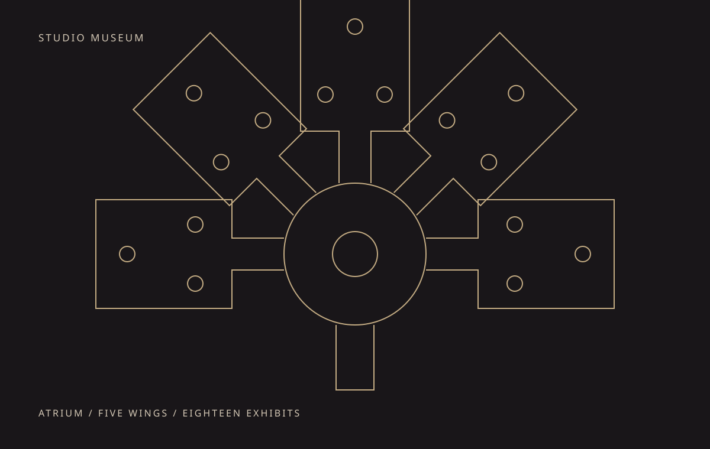

01
Konam
A bicycle becomes a canvas. A digital museum of speed, engineering and color.
View case studyJoão Caldas · Independent creative practice
Digital objects. Living worlds.
Systems built with curiosity.

A selection of things I’m building
From a bike’s material finish to a research system’s evidence trail. Explore the work, the thinking, and what comes next.
6 projects
A bicycle becomes a canvas. A digital museum of speed, engineering and color.
View case study
02An observatory for beliefs, rituals and deep time. Every claim has a source; every unknown stays visible.
View case study
03The anatomy of a katana, made tangible through light, movement and a carefully built digital object.
View case study
04An architectural investigation where site, program and evidence shape the form.
View case study
05A landscape-led website that turns a sense of place into a living, changing atmosphere.
View case study
06A walkable collection of digital objects and speculative websites, arranged as rooms of a museum.
View case studyNo projects match this selection.
Behind the work
My practice moves between design, code and research. I make things you can explore: objects with a story, websites with a sense of place, and systems that make complex ideas easier to inspect.
This is a working collection. Each case study names its current stage, what exists today and the questions still open.
Explore my projects on GitHub ↗